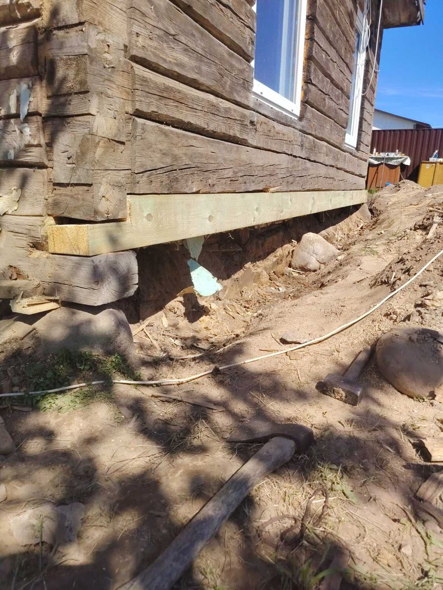
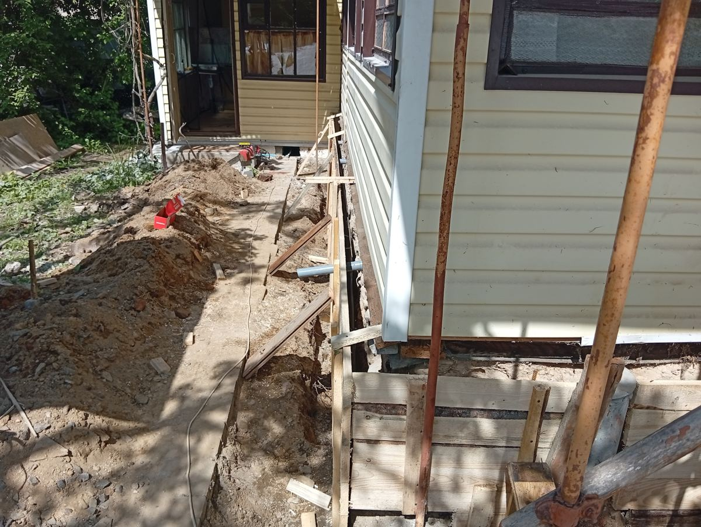
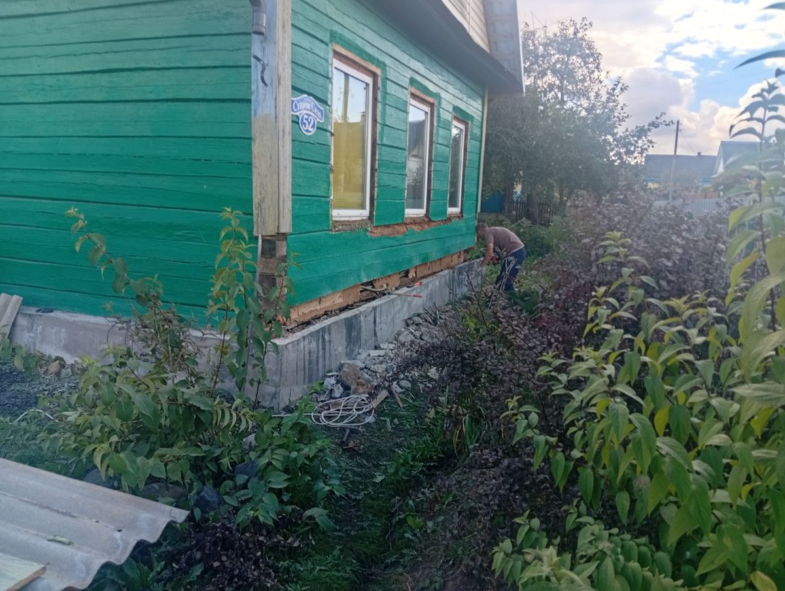
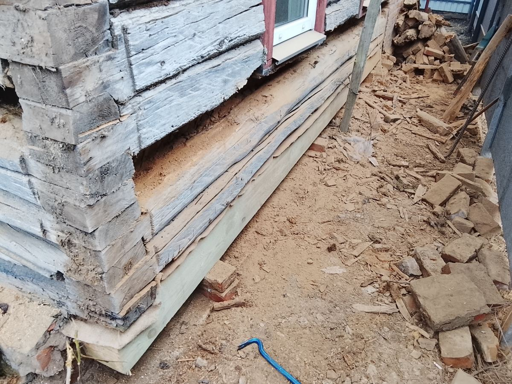

Замена венцов
Вырезаем гниль, ставим антисептированный брус или бревно, кладём двойную гидроизоляцию.
от 65 руб/м.пог.РассчитатьПоднимем сруб на домкратах, заменим венцы, отремонтируем или зальём фундамент, починим кровлю и укрепим грунт под основанием. Минск и вся Минская область. Гарантия от 5 лет.

Нижняя часть дома работает как единая система: грунт, фундамент, венцы, кровля. Берём на себя любой этап или весь комплекс.

Вырезаем гниль, ставим антисептированный брус или бревно, кладём двойную гидроизоляцию.
от 65 руб/м.пог.Рассчитать
Усиливаем ленту, восстанавливаем разрушенные участки, делаем гидроизоляцию и отмостку.
от 90 руб/м.пог.Рассчитать
Заливаем новое основание под дом: опалубка, арматура, бетон. Дом при этом стоит на опорах.
от 240 руб/м.пог.Рассчитать
Подводим основание глубже, уплотняем и заменяем слабый грунт, останавливаем просадку.
расчёт после осмотраРассчитать
Меняем стропила и обрешётку, перекрываем металлочерепицей, профнастилом или шифером, чиним свесы.
расчёт после осмотраРассчитать
Гидравлические домкраты на 20–50 тонн, подъём по 1–2 см за проход, без трещин и перекосов.
от 450 рубРассчитатьОтветьте на вопросы о доме. Сразу покажем ориентировочную цену, а мастер перезвонит и уточнит её.
Инженер приезжает за 50 руб., проверяет горизонт сруба, степень гнили и фундамент. Цену фиксируем до начала работ.
Стягиваем стены стальными стяжками и усиливаем проёмы коробками, чтобы дом не повело при подъёме.
Гидравлические домкраты на 20–50 тонн поднимают дом по 1–2 см за проход. Сруб встаёт на временные опоры.
Убираем сгнившие бревна и разрушенный бетон. Мусор собираем и вывозим сами.
Усиливаем старую ленту, заливаем новый армированный пояс или меняем основание целиком.
Ставим брус из лиственницы или сосны камерной сушки с антисептиком и двойной гидроизоляцией.
Опускаем дом, сверяем горизонт лазерным уровнем, конопатим швы. Подписываем акт и даём гарантию от 5 лет.
Подъём дома и замену венцов лучше не делать своими силами: ошибка вызовет трещины в стенах и перекос сруба. Мы работаем по строительным нормам и отвечаем за результат.
Чем раньше начать, тем меньше гнили придётся убирать и тем дешевле выйдет ремонт.

Реальные фото с работ: от замены венцов до заливки нового фундамента.
| Выезд инженера и составление сметы | 50 руб. |
| Демонтаж сгнившего венца | от 35 руб/м.пог. |
| Замена венца из бруса 150×150 / 200×200 | от 65 руб/м.пог. |
| Замена венца из бревна | от 80 руб/м.пог. |
| Подъём дома домкратами (за точку) | от 120 руб |
| Вывешивание дома на временные опоры | от 45 руб/м.пог. |
| Ремонт фундамента | от 90 руб/м.пог. |
| Укрепление фундамента под венцами | от 110 руб/м.пог. |
| Замена фундамента | от 240 руб/м.пог. |
| Горизонтальная гидроизоляция, 2 слоя | от 15 руб/м.пог. |
| Межвенцовый утеплитель (джут, лён) | от 10 руб/м.пог. |
| Локальный ремонт фрагмента венца | от 180 руб/шт. |
| Монтаж отливов по периметру фундамента | от 25 руб/м.пог. |
Итог зависит от размера и веса дома (печь, мансарда), числа венцов и объёма дополнительных работ. Точная цена — в смете после выезда инженера (50 руб.). Информация на сайте не является публичной офертой.
Выезд инженера и составление сметы стоят 50 руб. Инженер осмотрит дом, оценит степень гнили и состояние фундамента и подготовит подробную смету.
Гарантия на работы — от 5 лет. Условия фиксируем в договоре и акте приёмки.
Да. Выезжаем в Минск и населённые пункты Минской области. Если вашего населённого пункта нет в списке, позвоните, и мы уточним возможность выезда.
Нет. Сруб поднимается на домкратах, нижние венцы меняются без разборки стен и крыши.
Перед подъёмом стены стягиваем, проёмы фиксируем, подъём идёт синхронно по 1–2 см. Риск трещин минимален.
Да. Выпиливаем гнилой участок и ставим новый брус на шканты. Это дешевле полной замены.
Нет. Нижние панели временно снимаем, после работ возвращаем на место.
Обрабатываем антисептиком глубокого проникновения в 2–3 слоя и кладём двойную гидроизоляцию между фундаментом и венцом.
В среднем 3–5 рабочих дней для стандартного дома 6×6 м. Если добавляется фундамент, срок согласуем в договоре.
Да, это обычная практика. Брус проще стыкуется с фундаментом и по несущей способности не уступает бревну того же сечения.
Вывешиваем угол, вырезаем повреждённую часть и вставляем новый «замок», повторяя рубку.
Пришлите фото или видео нижних венцов и фундамента в Telegram, мы сделаем предварительный расчёт.
Звоните или пишите в Telegram. Выезд инженера и смета — 50 руб., гарантия от 5 лет. Можно прислать фото нижних венцов и фундамента, мы сделаем предварительный расчёт.
Работаем в Минске, Борисове, Жодино, Заславле, Фаниполе, Дзержинске, Смолевичах, Логойске, Марьиной Горке, Молодечно и других населённых пунктах Минской области. Выезд инженера и смета — 50 руб.